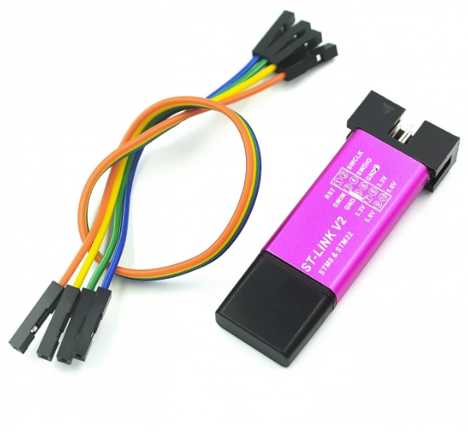

ST-LINK V2 Programming Dongle
Purpose
Use the ST-Link V2 programmer to flash the binary Mecrisp-Stellaris FORTH operating system onto the STM32 board.
It connects between your Windows computer with usb and the SWD pins on the STM32 board.
What to buy
These cost about $2 on Aliexpress, here.
